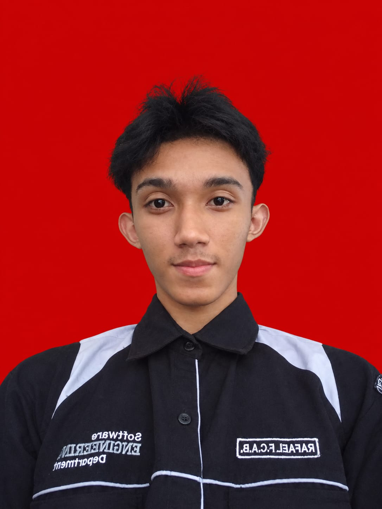

Membuat apk data analyst
Membuat Aplikasi Menggunakan Javascript
Pendidik & Pengembang Teknologi Pembelajaran
Saya Rafael Faradise — pelajar dari SMKN 1 Jenangan Ponorogo.

Saya adalah pelajar SMKN 1 Jenangan Ponorogo dari jurusan Rekayasa Perangkat Lunak (RPL). Saya senang mempelajari bagaimana sebuah aplikasi atau sistem dapat dirancang untuk menyelesaikan berbagai permasalahan. Saya terus berusaha mengembangkan kemampuan di bidang pemrograman, pengembangan aplikasi, serta teknologi informasi melalui pembelajaran dan berbagai proyek yang saya kerjakan.
Rekayasa Perangkat Lunak
Jangan takut gagal, takutlah kalau berhenti mencoba
Mempelajari dasar-dasar pengembangan website menggunakan HTML, CSS, JavaScript, serta memahami konsep dasar pembuatan website yang responsif dan interaktif.
Mengerjakan proyek pembuatan aplikasi sederhana sebagai bagian dari pembelajaran Rekayasa Perangkat Lunak, mulai dari perancangan tampilan hingga implementasi fitur.
Mengikuti pelajaran kelas tambahan tentang analisis data dan visualisasi.
Membuat aplikasi penjualan yg bisa digunakan untuk memudahkan proses transaksi di toko lokal.
Membuat Aplikasi Menggunakan Javascript
Aplikasi berbasis web untuk pencatatan kehadiran siswa secara real-time.
Menggunakan framework next.js untuk fe dan nest.js untuk be

Mengembangkan website modern dengan menerapkan teknologi web seperti HTML, CSS, JavaScript, dan framework yang sesuai. Proyek ini berfokus pada pembuatan tampilan yang responsif, interaktif, dan mudah digunakan, sekaligus meningkatkan kemampuan dalam frontend dan pengembangan aplikasi web.

Melaksanakan Praktik Kerja Lapangan (PKL) di Seje Digital dengan terlibat dalam kegiatan pengembangan dan pengelolaan website. Selama PKL, saya memperoleh pengalaman dalam menerapkan kemampuan RPL, bekerja secara terstruktur, serta memahami alur kerja di lingkungan industri teknologi.

Mengikuti kunjungan industri ke Gamelab untuk mengenal lebih dekat dunia kerja di bidang teknologi dan pengembangan software. Kegiatan ini memberikan wawasan mengenai proses kerja industri, pengembangan aplikasi, serta keterampilan yang dibutuhkan oleh seorang programmer.
Refleksi dari pengalaman mengajar dasar-dasar pemrograman di kelas.
Tutorial singkat membangun modul belajar sederhana tanpa framework.
Pelajaran dan tantangan selama delapan minggu belajar intensif.
Tertarik untuk berdiskusi, berkolaborasi, atau mengenal lebih jauh tentang proyek dan pengalaman saya di bidang Rekayasa Perangkat Lunak? Silakan hubungi saya melalui kontak berikut.